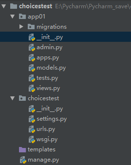
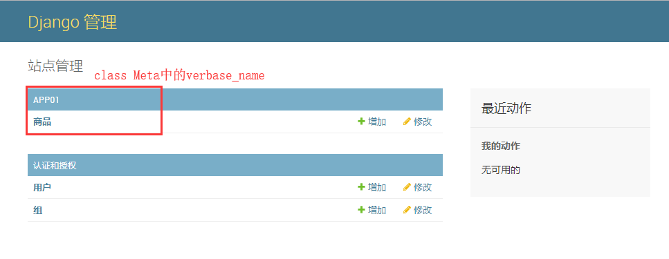
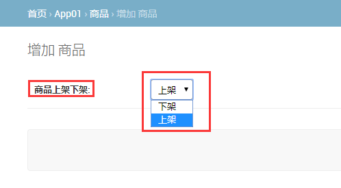
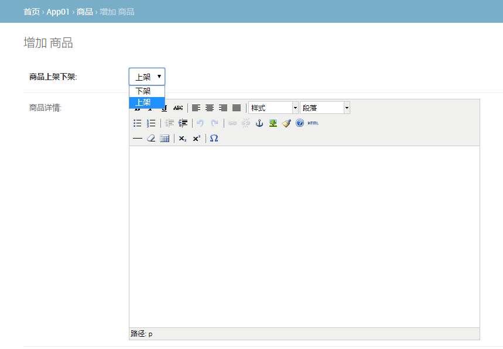

1.创建数据库
create database choices_test default charset utf8;2.创建一个名为 choices_test 的Django项目；
3.创建应用app01；
项目结构如下所示

4.配置数据库；
DATABASES = {
'default': {
'ENGINE': 'django.db.backends.mysql',
'NAME': 'choices_test',
'USER': 'root',
'PASSWORD': 'root',
'HOST': 'localhost',
'PORT': '3306',
}
}5.__init__.py
import pymysql
pymysql.install_as_MySQLdb()
1.编写Goods模型类
from django.db import models
class Goods(models.Model):
STATUS_CHOICES = (
(0, '下架'),
(1, '上架'),
)
ststus = models.SmallIntegerField(choices=STATUS_CHOICES, default=1, verbose_name="商品上架下架")
class Meta:
db_table = "goods" # 指定创建表名使表名为goods
verbose_name = "商品"
verbose_name_plural = verbose_name # 和上面一句结合使用，在后台管理时显示表名为"商品"verbose_name作用
2.去admin.py文件注册Goods模型类
from django.contrib import admin
from app01.models import Goods
admin.site.register(Goods)
3.数据表迁移
python manage.py makemigrations
python manage.py migrate
4.配置后台管理
配置时区
LANGUAGE_CODE = 'zh-hans'
TIME_ZONE = 'Asia/Shanghai'创建超级管理员
python manage.py createsuperuser
user:admin
password:admin123
5.启动项目
登录后台管理
如下页面

choices选项效果图

1.安装编辑器包
pip install django-tinymce2.注册tinymce应用
INSTALLED_APPS = [
'tinymce',
]3.在settings文件中添加tinymce配置
# 编辑器相关配置
TINYMCE_DEFAULT_CONFIG = {
'theme': 'advanced',
'width': 600,
'height': 400,
}4.配置tinymce路由
from django.conf.urls import url, include
urlpatterns = [
url(r'^tinymce/', include('tinymce.urls')),
]
1.编写模型类代码
from tinymce.models import HTMLField
class Goods(models.Model):
"""商品测试模型类"""
STATUS_CHOICES = (
(0, '下架'),
(1, '上架'),
)
ststus = models.SmallIntegerField(choices=STATUS_CHOICES, default=1, verbose_name="商品上架下架")
# null=True 允许数据库为空，blank=True 允许后台输入时为空
detail = HTMLField(null=True, blank=True, verbose_name="商品详情")
class Meta:
db_table = "goods" # 指定创建表名使表名为goods
verbose_name = "商品"
verbose_name_plural = verbose_name # 和上面一句结合使用，在后台管理时显示表名为"商品"
2.数据表迁移
python manage.py makemigrations
python manage.py migrate
3.进入后台管理，增加商品
至此，我们可以在后台管理中看见如下页面

即富文本编辑器在后台中使用成功。